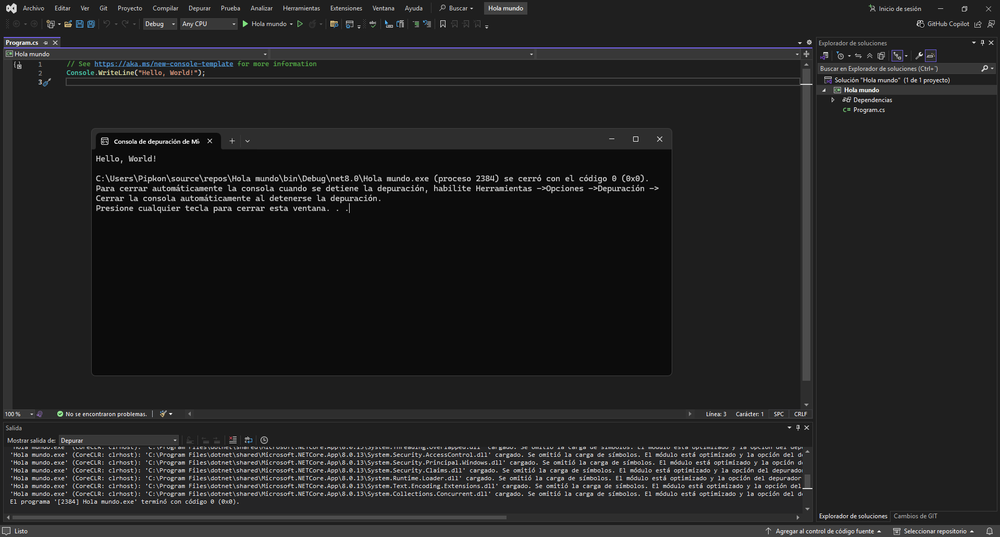
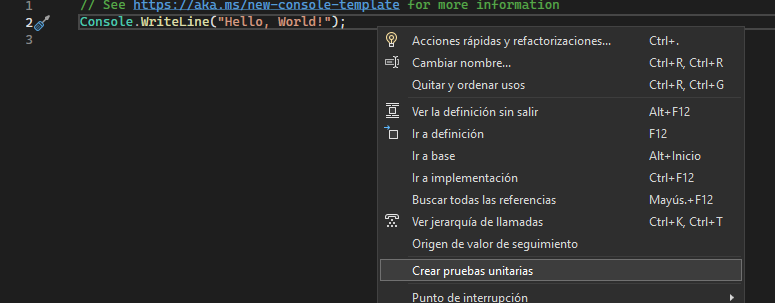
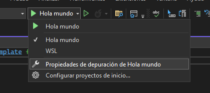
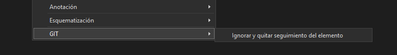

El programa está completamente traducido, lo que te permite trabajar en tu idioma preferido. Disfruta de una experiencia de desarrollo más fluida y accesible sin barreras lingüísticas.
Programa con confianza y precisión gracias a IntelliSense e IntelliCode. Recibe sugerencias automáticas para completar líneas de código y mejora tu código rápidamente con acciones como renombrar funciones o agregar parámetros.
Por ejemplo, aquí puedes ver un simple código de "Hola Mundo":
Prueba tu código de forma sencilla con la opción de pruebas unitarias del IDE. Solo haz clic derecho sobre el código y selecciona la opción correspondiente para ejecutar y verificar los resultados.
Por ejemplo, aquí puedes ver un test unitario en acción:
Depura tu código fácilmente con las herramientas del IDE. Configura puntos de interrupción, inspecciona variables y ejecuta el código paso a paso para encontrar y corregir errores de manera eficiente.
Por ejemplo, aquí puedes ver una sesión de depuración en acción:
Gestiona el control de versiones de tu código de manera eficiente con las herramientas integradas del IDE. Realiza seguimiento de cambios, crea ramas y maneja commits, todo sin salir del entorno de desarrollo.
Por ejemplo, aquí puedes ver cómo se gestionan las versiones directamente desde el IDE:
